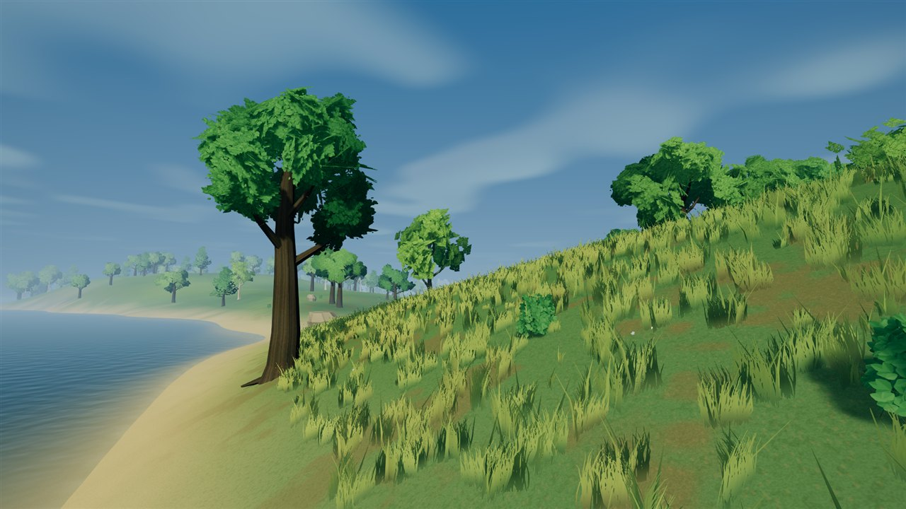
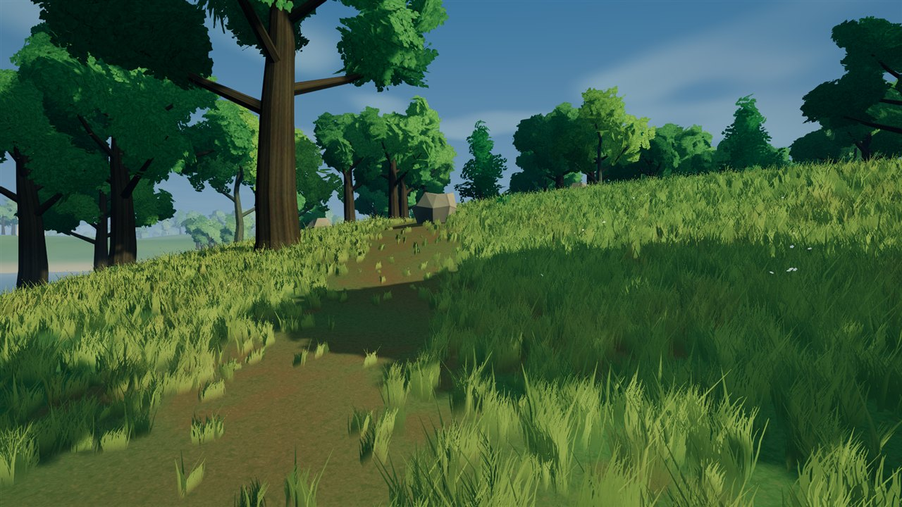
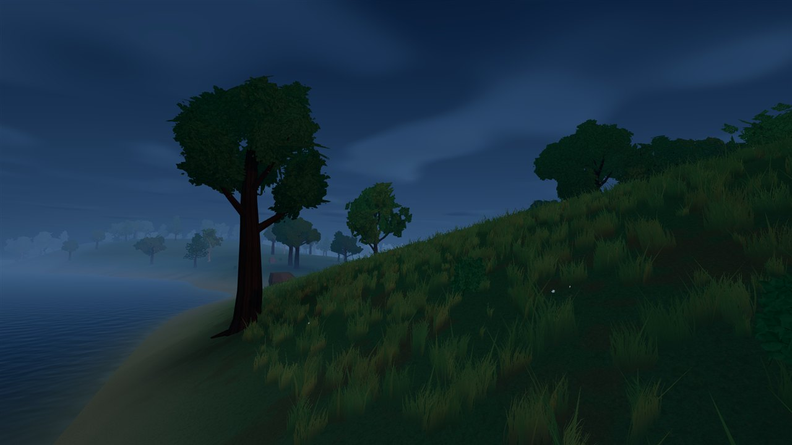

DAY / DUSK / SHORELINE
Grass that sits closer to the ground palette.
A restrained warm grass palette reduces the yellow cast, while a modest lift in root ambient visibility softens dark tuft bases. This is a profile-only colour and shading adjustment: grass shape, placement and density stay the same.
After images appear first. Tap any image for its full-resolution original. Cloud settings are unchanged. Manual desktop review of the cloud-shadow pass remains pending; merging it did not mark that review complete. This website contains screenshots, not a playable mobile game. The distant-forest comparisons remain available.
NORMAL GAME / GROUND AND GRASS
Day / ordinary player camera


NORMAL GAME / GROUND AND GRASS
Day / shoreline


NORMAL GAME / GROUND AND GRASS
Day / close grass inspection


NORMAL GAME / GROUND AND GRASS
Dusk / shoreline
